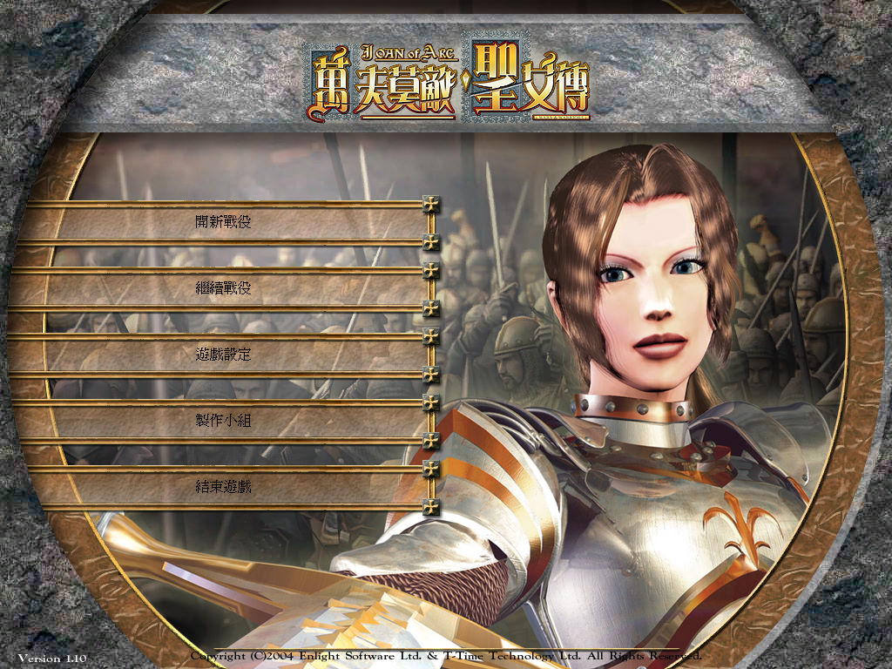
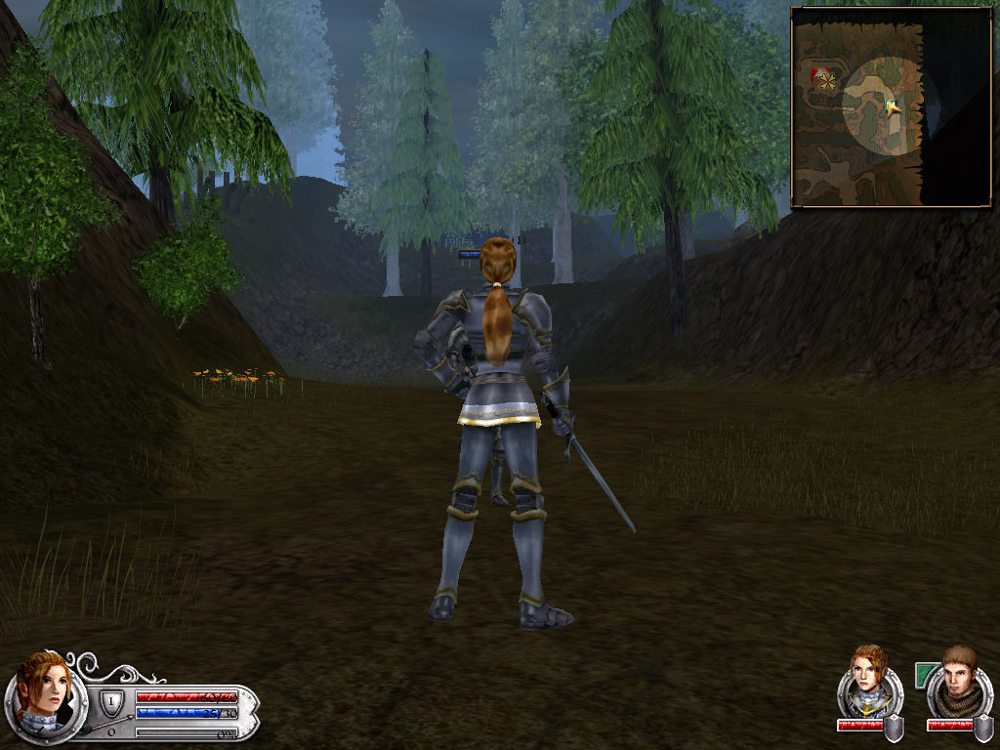

名稱：萬夫莫敵：聖女傳／戰爭與勇士：聖女貞德 (Wars and Warriors: Joan of Arc，中文版)
簡介：Enlight 2004年出品的動作遊戲，兼具部份即時戰略與角色扮演的元素，由光譜中文
化並代理發行 [待補]。


備註：本版光碟檔為LCD格式，需使用CDSpace 5.0掛載。
保護：繁中版為光碟SecuROM 5.03
備註：繁中版為1.10版
備註：繁中版不能使用英文版免光碟，文字會顯示不出來。